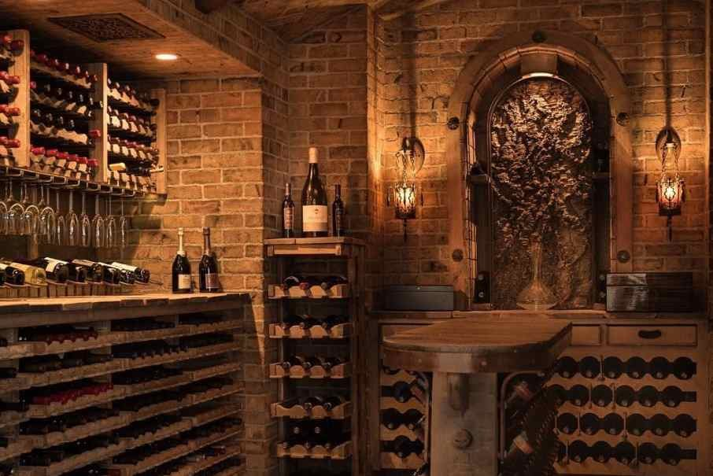
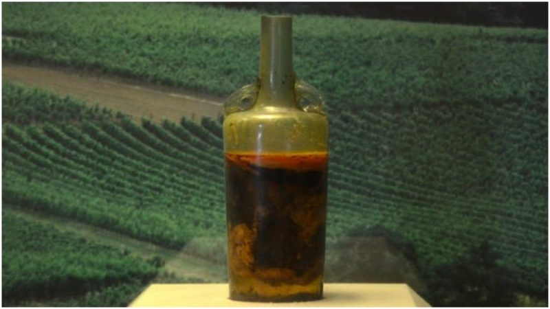

Curiosidades

Mundo dos Vinhos
São cerca de 6.000 variedades de uvas viníferas no mundo, que adquirem características e sabores diferentes de acordo com a região!
Ver Detalhes

Armazenagem Controlada
A Vinheria Agnello adota cuidados especiais na armazenagem de seus vinhos,buscando assim garantir a seus clientes mais exigentes a qualidade original de cada garrafa!
Ver Detalhes

Vinho mais Antigo do Mundo
Você sabia que existe uma garrafa de vinho com mais de 1600 anos? Pois é, faz tudo isso de tempo que existe vinho no mundo!
Ver Detalhes